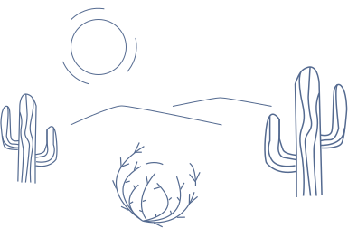

<!DOCTYPE html>
<html lang="en">
  <head>
    <title>Bit</title>
    <meta charset="UTF-8" />
    <meta name="theme-color" content="#565f89" />
    <link rel="manifest" href="./manifest.json" />
    <meta name="viewport" content="width=device-width, height=device-height" />
    <meta name="description" content="Run Hyper Link Programms" />
    <link
      rel="icon"
      type="image/x-icon"
      href="./editor/assets/images/favicon.png"
    />
    <style>
      body {
        color: #000;
        background: #fff;
        text-align: center;
        font-family: 'Virgil';
      }
      @font-face {
        font-family: 'Virgil';
        src: url(./editor/assets/fonts/Virgil.woff2) format('woff2');
        font-display: swap;
      }
      #placeholder {
        width: 90%;
        height: 60vh;
      }
      #output {
        word-break: break-all;
        white-space: normal;
      }
    </style>
  </head>
  <body>
    <!--  -->
    <p id="output"></p>
    <script src="./src/misc/svg.min.js"></script>
    <script src="./src/misc/rough.min.js"></script>
    <script type="module" src="preview.js"></script>
  </body>
</html>
